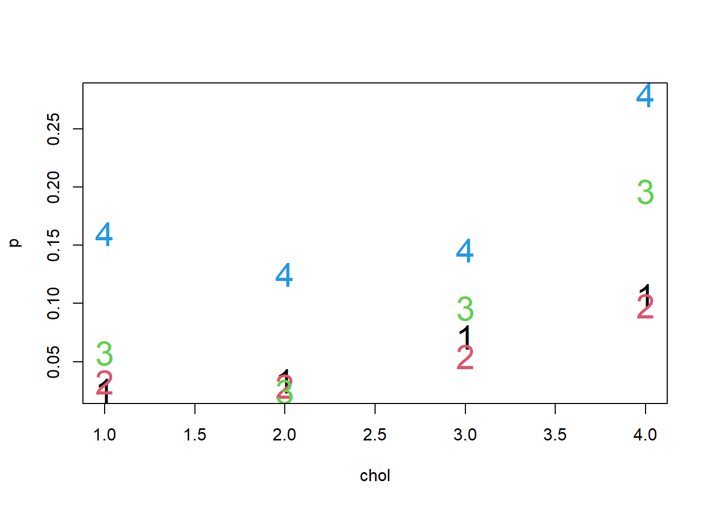
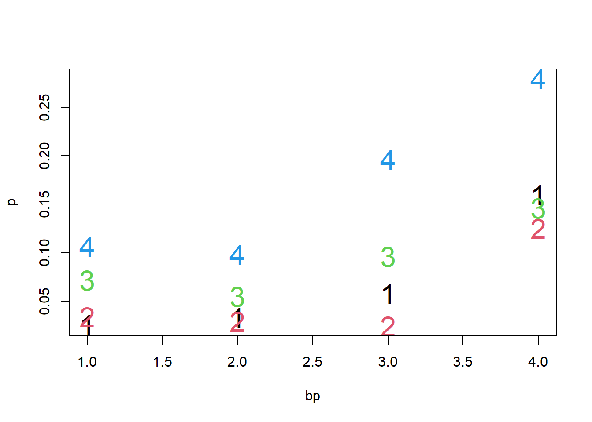
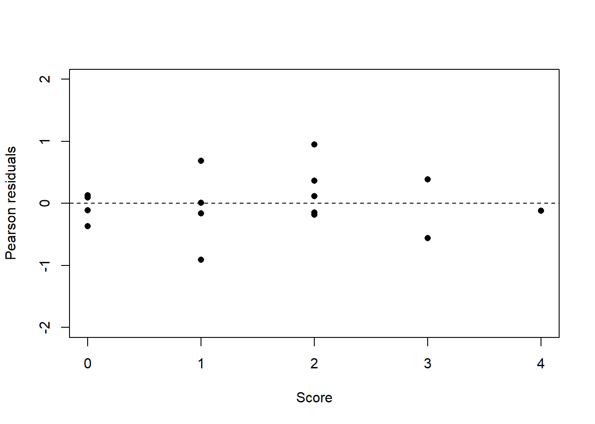
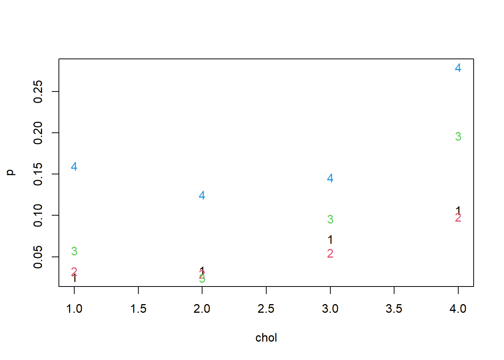
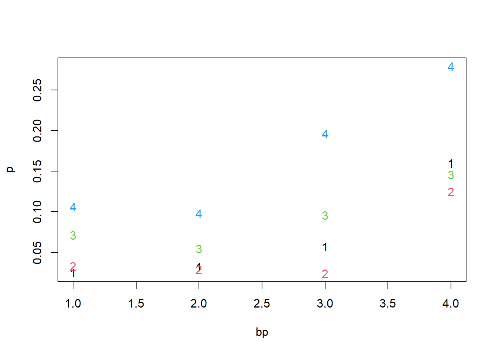
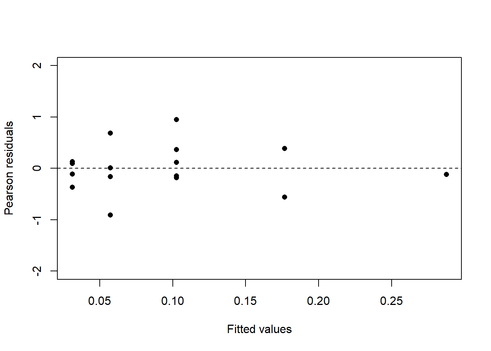

Code
emp = matrix(p, nrow=4, byrow=T, dimnames=list(paste("chol", 1:4), paste("bp", 1:4)))
round(emp, 2) bp 1 bp 2 bp 3 bp 4
chol 1 0.03 0.03 0.06 0.16
chol 2 0.03 0.03 0.02 0.12
chol 3 0.07 0.05 0.10 0.15
chol 4 0.11 0.10 0.20 0.28The probability of having coronary heart disease (CHD) increases as both cholesterol (CHOL) and blood pressure (BP) increase. The explanatory variables CHOL and BP are available as ordinal factors, each observed at 4 levels, although there is no significant evidence of different incidence of CHD at the lowest two levels of either CHOL or BP. In particular, after combining levels 1 and 2 of CHOL and BP, respectively, the incidence of CHD in the population of American males is given in the following table.
| CHOL | BP Normal/Elevated | BP Stage I | BP Stage II | |
|---|---|---|---|---|
| Normal/Medium | 0.03 | 0.04 | 0.14 | |
| High risk | 0.06 | 0.10 | 0.15 | |
| Dangerous | 0.10 | 0.20 | 0.28 |
Any analysis should start with some general exploration of the data.
# Read in data
chd = read.table("https://rgaykroyd.github.io/MATH3823/Datasets/chd.txt", header=T)
attach(chd)
p = y/m
# Look at the data
plot(chol, p, pch=as.character(bp), col=bp, cex=2)
plot( bp, p, pch=as.character(chol), col=chol, cex=2)

From Figure 1 (a) we can see three things.
The values of p for chol=1 and chol=2 are similar (suggesting combining these factor levels for chol.
The increase in p from chol=1,2 to chol=3 is about the same as the increase from chol=3 to chol=4 (suggesting replacing a 3-level factor by a quantitative variable).
It’s difficult to see whether an interaction term will be needed. For any given level of chol, the observed p is about the same for bp = 1 or 2, and the value of p for bp = 4 is always the highest, with the value of p for bp = 3 usually in between (the exception is bp = 3 when chol = 2). Overall, this suggests that an interaction term will probably not be needed.
A similar interpretation comes from Figure 1 (b) for p vs. bp. Further the slope in Figure 1 (a) over chol levels 2–4 is about the same as the slope in Figure 1 (b) over bp levels 2–4, suggesting that the magnitude of the effects of chol and bp will be similar. We can get similar conclusions from looking at a table of values of p (rounded to 2 d.p.):
emp = matrix(p, nrow=4, byrow=T, dimnames=list(paste("chol", 1:4), paste("bp", 1:4)))
round(emp, 2) bp 1 bp 2 bp 3 bp 4
chol 1 0.03 0.03 0.06 0.16
chol 2 0.03 0.03 0.02 0.12
chol 3 0.07 0.05 0.10 0.15
chol 4 0.11 0.10 0.20 0.28Here is a route to a parsimonious model. It is important to distinguish between qualitative and quantitative variables. I shall use the following notation:
bf: blood pressure taking 4 levels 1,2,3,4, as a factor.
b1f blood pressure taking 3 levels 1,1,2,3, as a factor (so the original levels 1 and 2 are combined).
b2f: blood pressure taking 2 levels 1,1,1,2, as a factor.
Define similar variables for cholesterol (cf, c1f, c2f) and drop the “f” if the variate is to be regarded as quantitative (b, b1, b2, c, c1, c2).
A sequence of models is fitted at the end of the handout, each simpler than the preceding. For each fitted model it is important to check
that the deviance is not too big (goodness of fit test), and
that the increase in deviance from the previous model is not too big for the increase in residual degrees of freedom.
The models used and the main conclusions from each model are as follows:
A surprising feature of this analysis is that each simplification of the model introduces such a small change to the deviance. You can also compare the deviances of your chosen model with the different link functions (logit, probit, complementary log-log). There is little difference in the deviances (remember we can’t do a formal test as the model has the same number of parameters). Hence, any choice of the link function is acceptable here. The probit has a slightly lower deviance, so that would be a good choice. I have chosen to use the logit link function as this is the canonical link and is the most widely used.
For any seriously entertained model you should plot the residuals to make sure that the model is not missing any important structure. For the above models there are no large residuals for this example.
resp = cbind(y,m-y)
c1 = 1*(chol==1) + 1*(chol==2) + 2*(chol==3) + 3*(chol==4)
b1 = 1*( bp==1) + 1*( bp==2) + 2*( bp==3) + 3*( bp==4)
score = c1+b1-2
m5 = glm(resp ~ score, family = binomial)
res = residuals(m5, "pearson")
fv = fitted.values(m5)
plot(fv, res, xlab = "Fitted values", ylab = "Pearson residuals",
ylim=c(-2,2), pch=16)
abline(0, 0, lty=2)
plot(score, res, xlab = "Score", ylab = "Pearson residuals",
ylim=c(-2,2), pch=16)
abline(0, 0, lty=2)

Figure 2 (a) and Figure 2 (b) are plots of the residuals for model 5, plotted against the fitted values and the values of score respectively. None of the residuals are worrying. One residual stands out slightly - the residual with the largest magnitude, about 1.5.
For the low levels of BP and CHOL there are very few cases of CHD. Thus it is difficult to make any strong statement about how probabilities depend on level. The best we can say is that there is not enough data to enable us to distinguish the differences between levels 1 and 2 for CHOL and BP, respectively.
This appendix contain the R code used to produce these Solution but they are not meant to represent the best solution and there are always other ways to organize code and to perform a valid analysis.
##################################################
# MATH3823 Practical Assessment 2022-23
# (C) RGA 03/05/2023
##################################################
# Read in the data.
chd = read.table("https://rgaykroyd.github.io/MATH3823/Datasets/chd.txt", header=T)
attach(chd)The following objects are masked from chd (pos = 3):
bp, chol, m, yresp = cbind(y,m-y)
p = y/m
# Look at the data.
plot(chol, p, pch=as.character(bp), col=bp)
plot( bp, p, pch=as.character(chol), col=chol)
# Tabulate empirical values of "p".
emp = matrix(p, nrow=4, byrow=T, dimnames=list(paste("chol", 1:4), paste("bp", 1:4)))
round(emp, 2) bp 1 bp 2 bp 3 bp 4
chol 1 0.03 0.03 0.06 0.16
chol 2 0.03 0.03 0.02 0.12
chol 3 0.07 0.05 0.10 0.15
chol 4 0.11 0.10 0.20 0.28# Set up explanatory variables as factors.
cf = as.factor(chol); bf = as.factor(bp)
# Try main effects model first.
m1 = glm(resp ~ cf + bf, family = binomial)
summary(m1)
Call:
glm(formula = resp ~ cf + bf, family = binomial)
Deviance Residuals:
Min 1Q Median 3Q Max
-0.85988 -0.15141 -0.00509 0.21420 0.76171
Coefficients:
Estimate Std. Error z value Pr(>|z|)
(Intercept) -3.2868 0.3242 -10.137 < 2e-16 ***
cf2 -0.1522 0.4252 -0.358 0.720419
cf3 0.5424 0.3280 1.654 0.098208 .
cf4 1.2123 0.3243 3.738 0.000185 ***
bf2 -0.1121 0.2880 -0.389 0.697236
bf3 0.5165 0.3144 1.643 0.100460
bf4 1.1917 0.3109 3.833 0.000127 ***
---
Signif. codes: 0 '***' 0.001 '**' 0.01 '*' 0.05 '.' 0.1 ' ' 1
(Dispersion parameter for binomial family taken to be 1)
Null deviance: 52.0260 on 15 degrees of freedom
Residual deviance: 2.8017 on 9 degrees of freedom
AIC: 71.415
Number of Fisher Scoring iterations: 4# Do goodness of fit test (statistic and degrees of freedom from output).
pchisq(2.8017, df = 9, lower.tail = F)[1] 0.9716406# Combine levels 1 & 2 of each factor.
c1 = 1*(chol==1) + 1*(chol==2) + 2*(chol==3) + 3*(chol==4)
b1 = 1*( bp==1) + 1*( bp==2) + 2*( bp==3) + 3*( bp==4)
c1f = as.factor(c1); b1f = as.factor(b1)
m2 = glm(resp ~ c1f + b1f, family = binomial)
summary(m2)
Call:
glm(formula = resp ~ c1f + b1f, family = binomial)
Deviance Residuals:
Min 1Q Median 3Q Max
-0.97750 -0.20493 0.00219 0.15582 0.86466
Coefficients:
Estimate Std. Error z value Pr(>|z|)
(Intercept) -3.4128 0.2277 -14.989 < 2e-16 ***
c1f2 0.6010 0.2747 2.188 0.0287 *
c1f3 1.2733 0.2705 4.707 2.52e-06 ***
b1f2 0.5814 0.2686 2.164 0.0304 *
b1f3 1.2550 0.2640 4.753 2.00e-06 ***
---
Signif. codes: 0 '***' 0.001 '**' 0.01 '*' 0.05 '.' 0.1 ' ' 1
(Dispersion parameter for binomial family taken to be 1)
Null deviance: 52.0260 on 15 degrees of freedom
Residual deviance: 3.0845 on 11 degrees of freedom
AIC: 67.698
Number of Fisher Scoring iterations: 4# Compare this model with previous.
pchisq(3.0845 - 2.8017, 11 - 9, lower.tail = F)[1] 0.868142# Tabulate empirical values of "p" after combining levels.
y.M2 = c(3+4+3+3, 3+1, 4+3,
9+12, 7, 7,
8+11, 11, 12)
m.M2 = c(118+122+89+102, 52+41, 25+24,
126+219, 73, 48,
75+112, 56, 43)
p2 = y.M2/m.M2
emp = matrix(p2, nrow=3, byrow=T, dimnames=list(paste("chol", 1:3), paste("bp", 1:3)))
round(emp, 2) bp 1 bp 2 bp 3
chol 1 0.03 0.04 0.14
chol 2 0.06 0.10 0.15
chol 3 0.10 0.20 0.28# All ok so far. Combine more levels.
c2 = 1*(chol==1) + 1*(chol==2) + 1*(chol==3) + 2*(chol==4)
b2 = 1*(bp==1) + 1*(bp==2) + 1*(bp==3) + 2*(bp==4)
c2f = as.factor(c2); b2f = as.factor(b2)
m3 = glm(resp ~ c2f + b2f, family = binomial)
summary(m3)
Call:
glm(formula = resp ~ c2f + b2f, family = binomial)
Deviance Residuals:
Min 1Q Median 3Q Max
-1.2834 -0.7523 -0.2119 0.3573 1.6690
Coefficients:
Estimate Std. Error z value Pr(>|z|)
(Intercept) -2.9745 0.1447 -20.555 < 2e-16 ***
c2f2 0.9846 0.2172 4.533 5.82e-06 ***
b2f2 1.1286 0.2523 4.472 7.74e-06 ***
---
Signif. codes: 0 '***' 0.001 '**' 0.01 '*' 0.05 '.' 0.1 ' ' 1
(Dispersion parameter for binomial family taken to be 1)
Null deviance: 52.026 on 15 degrees of freedom
Residual deviance: 12.300 on 13 degrees of freedom
AIC: 72.913
Number of Fisher Scoring iterations: 4# Compare this model with previous.
pchisq(12.3 - 3.0845, 13 - 11, lower.tail = F)[1] 0.009974235# Significant difference - revert to model 2.
# Try converting factors to quantitative variables
# and compare to model 2.
m4 = glm(resp ~ c1 + b1, family = binomial)
summary(m4)
Call:
glm(formula = resp ~ c1 + b1, family = binomial)
Deviance Residuals:
Min 1Q Median 3Q Max
-1.0023 -0.1816 -0.0361 0.1929 0.9160
Coefficients:
Estimate Std. Error z value Pr(>|z|)
(Intercept) -4.6981 0.3644 -12.894 < 2e-16 ***
c1 0.6392 0.1349 4.738 2.16e-06 ***
b1 0.6232 0.1295 4.811 1.50e-06 ***
---
Signif. codes: 0 '***' 0.001 '**' 0.01 '*' 0.05 '.' 0.1 ' ' 1
(Dispersion parameter for binomial family taken to be 1)
Null deviance: 52.0260 on 15 degrees of freedom
Residual deviance: 3.1399 on 13 degrees of freedom
AIC: 63.753
Number of Fisher Scoring iterations: 4 pchisq(3.1399 - 3.0845, 13 - 11, lower.tail = F)[1] 0.9726801# Compare the deviances using the different link functions.
deviance(glm(resp ~ c1 + b1, family = binomial(link = "logit")))[1] 3.13989 deviance(glm(resp ~ c1 + b1, family = binomial(link = "probit")))[1] 3.085097 deviance(glm(resp ~ c1 + b1, family = binomial(link = "cloglog")))[1] 3.236547# Combine the effects of chol and bp into one "risk score".
score = c1+b1-2
m5 = glm(resp ~ score, family = binomial)
summary(m5)
Call:
glm(formula = resp ~ score, family = binomial)
Deviance Residuals:
Min 1Q Median 3Q Max
-1.01802 -0.16693 -0.04974 0.18385 0.88413
Coefficients:
Estimate Std. Error z value Pr(>|z|)
(Intercept) -3.43155 0.19443 -17.650 < 2e-16 ***
score 0.63089 0.09015 6.998 2.59e-12 ***
---
Signif. codes: 0 '***' 0.001 '**' 0.01 '*' 0.05 '.' 0.1 ' ' 1
(Dispersion parameter for binomial family taken to be 1)
Null deviance: 52.0260 on 15 degrees of freedom
Residual deviance: 3.1468 on 14 degrees of freedom
AIC: 61.76
Number of Fisher Scoring iterations: 4 pchisq(3.1468 - 3.1399, 14 - 13, lower.tail = F)[1] 0.9337989# Finally, look at residuals to check there are no problems.
res = residuals(m5, "pearson")
fv = fitted.values(m5)
cbind(res, chd) res y m chol bp
1 -0.36794752 3 118 1 1
2 0.09275957 4 122 1 2
3 0.01252784 3 52 1 3
4 0.94793440 4 25 1 4
5 0.12910605 3 89 2 1
6 -0.11087053 3 102 2 2
7 -0.90644689 1 41 2 3
8 0.36345696 3 24 2 4
9 0.68298521 9 126 3 1
10 -0.15881956 12 219 3 2
11 -0.18613329 7 73 3 3
12 -0.56062942 7 48 3 4
13 0.11903116 8 75 4 1
14 -0.14946735 11 112 4 2
15 0.38713053 11 56 4 3
16 -0.12083640 12 43 4 4 plot(fv, res, xlab = "Fitted values", ylab = "Pearson residuals",
ylim=c(-2,2), pch=16)
abline(0, 0, lty=2)
plot(score, res, xlab = "Score", ylab = "Pearson residuals",
ylim=c(-2,2), pch=16)
abline(0, 0, lty=2)
detach(chd)